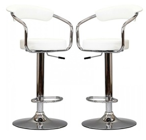

{%include file="$root/templete/common/navbar.html"%}
主页
/
产品
/ 厨房高脚旋转椅

厨房高脚旋转椅
By Create & Barrel
$127
in stock
加入购物车
加入收藏
.psd .jpg .dae
下载素材
产品详情： 具有良好的性能，木质材料，座椅按照人体工程学，十分舒适。适合厨房、吧台使用。 产品编号: CH1224535
{%include file="$root/templete/common/footer.html"%}